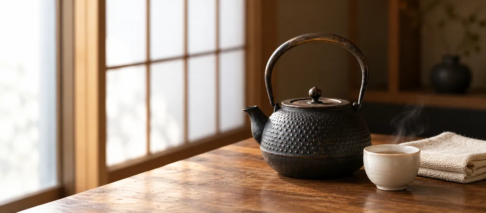
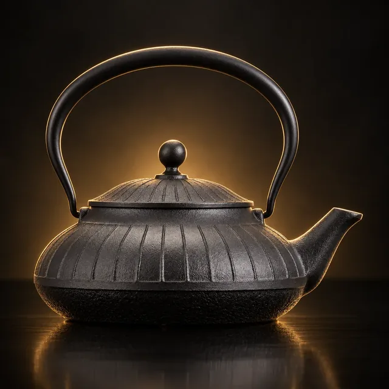
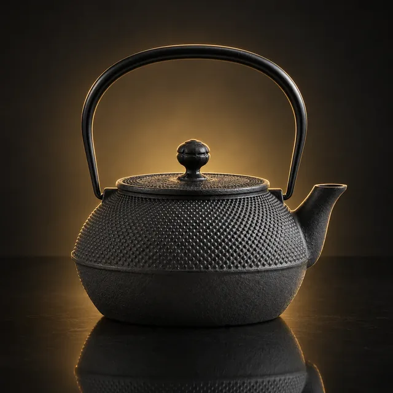
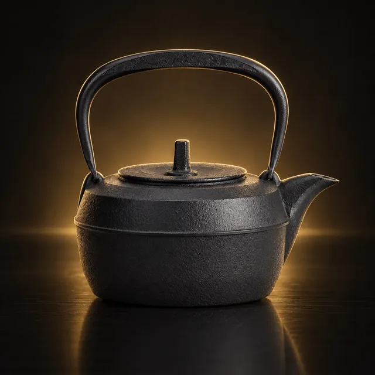
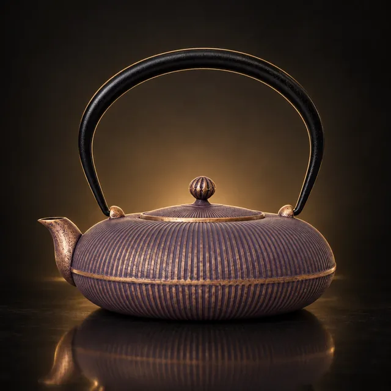
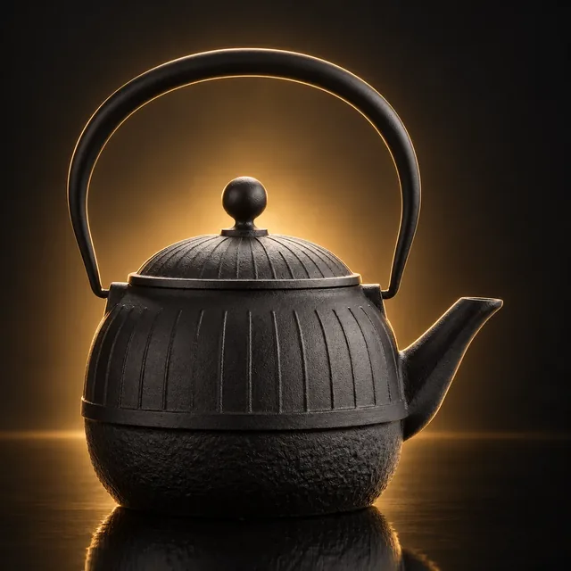

ガイド ／ メリット・デメリット
南部鉄瓶のデメリット7つとメリット5つ

「重い」「錆びる」「手入れが面倒」──南部鉄瓶のデメリットとしてよく聞く話です。どれも本当ですが、どれくらいなのかを数字で書いている記事はあまりありません。ここでは工房の公式情報と、本サイトが掲載している210銘柄のデータで、メリットとデメリットを確かめます。
01先に結論 ── 7つのデメリットと、5つのメリット
南部鉄瓶のデメリットは、重い・錆びる・手入れに作法がある・IHを選ぶ・熱くなる・割れることがある・値段の7つです。どれも本当ですが、多くは選び方と使い方で小さくできます。メリットは、直しながら長く使えることを筆頭に5つ。ただし、よく言われる「鉄分補給」は、数字で見るとメリットに数えられません。
| デメリット | どれくらい？ | 小さくする方法 |
|---|---|---|
| 重い | 1L前後で本体約1.7kg、満水で約2.7kg | 0.5〜0.8Lを選ぶ |
| 錆びる | 水を残すと錆びる（工房自身が明記） | 使ったら空にして乾かす |
| 手入れに作法 | 洗剤・たわしは使えない | 覚えることは「空にして乾かす」 |
| IHを選ぶ | IH対応は掲載の54% | 「IH対応」の表示で絞る |
| 熱くなる | 直火だとツル・つまみが熱い | 布巾や鍋つかみを使う |
| 割れることがある | 空焚き後の急冷・強火・落下 | 中火以下、熱いうちに水をかけない |
| 値段 | 掲載の最安で¥13,200 | 工房のはっきりした生型（量産向けの製法）を選ぶ |
以下、ひとつずつ工房の公式情報と、本サイトが掲載している210銘柄の数字で確かめていきます。
02デメリット① 重い ── 1L前後で、満水だと約2.7kg
いちばん多く挙がる不満が重さです。薫山工房は、購入後の感想として「想定よりかなり重い」「デザインは良いが扱いにくい」という声が業界に届いている、と書いています。
実際の重さを、本サイトの掲載データから容量ごとにまとめました。
| 容量 | 掲載数 | 本体の重さ（中央値） | 満水にしたとき（計算） |
|---|---|---|---|
| 0.6L未満 | 11銘柄 | 約1.0kg（1.0〜1.1kg） | 約1.5kg |
| 0.6〜0.8L | 16銘柄 | 約1.4kg（0.8〜2.0kg） | 約2.2kg |
| 0.9〜1.25L | 37銘柄 | 約1.7kg（1.2〜2.2kg） | 約2.7kg |
| 1.3〜1.6L | 18銘柄 | 約1.7kg（1.5〜2.4kg） | 約3.2kg |
| 1.7L以上 | 25銘柄 | 約2.1kg（1.8〜2.7kg） | 約3.9kg |
※本体の重さは、本サイト掲載210銘柄のうち工房公式または正規取扱店が重さを公表している107件の集計。「満水にしたとき」は本体の重さに容量ぶんの水（1Lで約1kg）を足した本サイトの計算で、工房の公表値ではありません。
及富は「鉄瓶は大きいサイズだと容量は2000mlを、重さは2kgを超えます。大きいものだと重過ぎて扱いにくいかもしれません」とし、「これらの鉄瓶の重さに水の重さも加わります」と注意しています。毎日持ち上げて注ぐ道具なので、本体の重さより「水を入れた重さ」で考えるのが現実的です。
小さくする方法
一人〜二人なら0.5〜0.8Lで十分です。及富も、一人で使うなら0.4〜1.0L、ご年配の方には容量の大きすぎる鉄瓶は避けたほうがよい、としています。満水まで入れずに8分目で使えば、そのぶん軽くなります。
容量・サイズの選び方を読む › / 0.5〜0.8Lの鉄瓶を見る ›
03デメリット② 錆びる ── 工房自身が書いている
鉄瓶の内側には、急須のようなホーローのコーティングがありません。あるのは釜焼きでつくる薄い酸化皮膜だけなので、水を残すと錆びます。及富は自社のガイドで「鉄という素材のために錆びやすいという点にも留意ください」と、はっきり書いています。
錆びやすい使い方も分かっています。OIGENは「沸騰していないぬるいお湯が長時間入ったままになっていると、サビが発生しやすく」なるとしています。
錆びても、すぐに使えなくなるわけではない
岩鋳はよくある質問で、「さびには害はなく、お湯をわかして濁らなければそのままお使いいただけます」と答えています。目安は湯の色です。薫山工房は「錆の場合はお湯が赤くなり、金気が出ます」としています。湯が濁ったり赤くなったりしたら、お茶の葉で煮出す手入れをします。手順や時間は工房によって違い、岩鋳の中でも案内ページによって書き方が違います。買った工房の案内に従うのが確実です。
小さくする方法
使い終わったら湯を空にし、蓋を取って余熱で乾かす。これだけで錆びにくくなります。
04デメリット③ 手入れに作法がある ── ただし覚えるのは1つ
鉄瓶は洗剤で洗えません。OIGENはその理由を「洗剤に含まれる成分が鉄瓶内部に付着する可能性」と説明しています。内側をたわしでこするのもいけません。外側に油がはねると「一度付着した油は完全に取ることはできません」とも書いています。
ここまで読むと面倒に思えますが、工房の言い方はむしろ逆です。鈴木盛久工房は「特に必要なお手入れは何もありません」とし、「とにかく使ったらすぐに空にして蓋を開けて乾かす、これだけです」。薫山工房も「正しくお使いいただけば、なにも面倒なことはございません」と書いています。
つまり手間の正体は「やることが多い」ではなく、「やってはいけないことがある」です。洗わない・こすらない・水を残さない。これを守れれば、日々の手入れはほとんどありません。
05デメリット④ IHを選ぶ ── 対応は掲載の54%
南部鉄瓶はすべてがIHで使えるわけではありません。本サイト掲載210銘柄のうち、工房公式でIH対応と確認できたのは114銘柄（54%）です。
高価格帯では、IH対応と確認できるものが少なくなります。5万円以上の銘柄でIH対応と確認できたのは46%で、残りの多くは工房が対応熱源にIHを挙げていないものです（2.5万円未満では68%）。OIGENは伝統製法の焼型鉄瓶について、底面だけを発熱させるIH調理器には向いていないと説明しています。
底の大きさにも条件があります。岩鋳は「底面積が12cm未満の場合は温まりにくかったり、温まるのに時間がかかります」、鈴木盛久工房は「平均的な鉄瓶の底面サイズ(10センチ前後)が反応するか事前にご確認ください」としています。
小さくする方法
キッチンがIHなら、模様や価格より先に「IH対応」の表示があるものに絞ってください。
06デメリット⑤ ツルとつまみが熱くなる
薫山工房は「鉉や蓋の摘みは熱くなります」と案内しています。及富も「全体が鉄でできている南部鉄器は、火にかけて使うと持ち手(ツル)が熱くなります」と書いています。布巾や鍋つかみを使ってください。
一方でIHには利点もあります。及富は、IHなら「持ち手は直火のときほど熱くなりません」、「IHなら鉄瓶の底部が変色しにくい」としています。
07デメリット⑥ 割れることがある ── 空焚き・急冷・強火
鉄は丈夫そうに見えますが、鋳物は急な温度変化に弱い素材です。各工房の注意書きを並べます。
- 岩鋳──「強火は本体にダメージが出る可能性」、「本体が熱いうちに水をかけたりするとひびが入ることがあります」
- OIGEN──長時間空焚きしたとき、「急に水を入れると、熱い蒸気が吹き出したり、急冷により鉄瓶が割れてしまう可能性」
- 薫山工房──空焚きしてしまったら「水などで急に冷やさず、そのままゆっくり冷ます」
- 鈴木盛久工房──蓋を落とすと「ツマミが折れたりする可能性」
そして割れは、後で説明する修理でも直せないことが多いのが厄介です。中火以下で使い、熱いうちに水をかけない。これだけは覚えておいてください。
08デメリット⑦ 値段 ── 本物は1万円台から
及富は「１万円前後から購入可能です」としつつ、別の記事で、セールなど特別な理由がない限り容量1リットルの鉄瓶を1万円以下で販売することは困難とも書いています。本サイト掲載の最安は¥13,200です。
ここで気をつけたいのが、安さを理由に工房の分からない鉄瓶を選ぶことです。理由は2つあります。ひとつは模倣品の問題、もうひとつは修理を頼める相手がいないことです（次の節）。
09メリット① 直しながら、長く使える
鉄瓶の最大のメリットは、工房が「長く使う道具」として作り、直す窓口まで持っていることです。南部鉄器協同組合は「次の世代まで引き継ぐことのできる比類ない耐久性」と書き、OIGENは「何十年も使い続けられる道具」としています。
修理の実際 ── できること、できないこと
OIGENは修理料金の目安を公開しています。サビ・油汚れの修理は商品価格の40%＋税、ツル外れは20%＋税（焼型は個別見積り、送料は客負担）。ただし、割れ・変形・サビによる大きな浸食・他社製品は受けられないとし、修理しても「新品のように戻るわけではありません」と正直に書いています。鈴木盛久工房も「他の工房で作られた鉄瓶の修理は承っておりません」としています。
つまり「長く使える」は、工房がはっきりした鉄瓶を買ったときだけ成り立つメリットです。「100年使える」といった言い方もありますが、及富も「といわれており」と伝聞の形で紹介しているもので、本サイトでは年数は断定しません。
10メリット② 湯の口当たりが変わる ── ただし理由は鉄分ではない
OIGENは、鉄瓶で沸かした湯を「『まろやかな口当たり』と表現したり、味わいを『あまい』と感じたりする」と書いています。断定ではなく、そう感じる人がいる、という書き方です。
同社は理由を、内側にできる湯垢（白い膜）による軟水化で説明しています。ただし、10〜30mg/L程度の硬度低下が見込める可能性があるという実験結果がいくつかある、と紹介しつつ、「安定した数値化は難しい」とも付け加えています。岩鋳は湯垢ができると湯の「味も一層おいしくなります」、鈴木盛久工房は「美味しい白湯を作ってくれる要因はこの湯垢」としています。
なお「鉄瓶だからカルキ（塩素）が抜ける」という説明も見かけますが、東京都水道局は、カルキ臭は沸騰後にふたを半開にして弱火で5〜10分ほど加熱してから冷ますことで抜けると説明しています。煮沸による働きで、鉄瓶に固有のものとは言えません。
11メリット③ 直火・ストーブでも使える
鉄瓶は火を選びません。ガスの直火はもちろん、OIGENはQ&Aでストーブの上でも使える（やけど・吹きこぼれに注意）としています。IH対応品ならIHでも使えます。電気ケトルと違って、壊れる電気部品がないのも長く使える理由のひとつです。
12メリット④ 模様と形を選ぶ楽しさがある
同じ「南部鉄瓶」でも、あられ・亀甲・桜などの模様、南部形・平丸・棗などの形、工房ごとの仕上げの色まで、選択肢がとても広い道具です。本サイトだけでも16工房・210銘柄を掲載しています。工房が意味を語っている模様もあり、贈り物にも選ばれます。
13メリット⑤ 国の伝統的工芸品を、毎日の道具として使える
南部鉄器は1975年に国の伝統的工芸品に指定されています。飾るためではなく、毎日湯を沸かす実用品として使えるのが鉄瓶のよさです。
14よく言われるけれど、そのまま信じないほうがいいこと
メリットとしてよく挙がるのに、一次ソースで確かめると言い切れないものがあります。
- 「鉄分補給になる」──鉄瓶の湯に溶ける鉄は、実測研究で1Lあたり約0.2mg。1L飲んでも、月経のある30〜49歳女性の1日の推奨量の約2%です。OIGENも溶出量は「正確な数値に関してはわかりかねます」としています
- 「保温性が高いから湯を入れておける」──鈴木盛久工房は「とにかく使ったらすぐに空にして蓋を開けて乾かす」と案内し、OIGENもぬるい湯を入れたままにすると錆びやすいとしています
- 「どこでも直してもらえる」──割れや他社製品は断られます（メリット①）
- 「外国製の鉄瓶は有害物質が出る」──南部鉄瓶と外国製鉄瓶で水道水を加熱して比べた平塚ほか（2004）は、どちらの鉄瓶も素材からの金属成分の溶け出しは「極めて少ない」としています。違いが出たのは、外国製で硬度やpHが大きく変わるなど湯の水質の変わり方でした。工房のはっきりしない鉄瓶を避けたい理由は、この水質の違いと、直す相手がいないことです
15向いている人・向かない人
向いている人
- 毎日、白湯やお茶のために湯を沸かす
- 「使ったら空にして乾かす」を習慣にできる
- 直しながら長く使う道具がほしい
向かない人（または選び方に注意が要る人）
- 湯を沸かしたまま、何時間も置いておきたい → 錆びやすい
- 重いものを持つのがつらい → 0.5〜0.8Lを選ぶ
- キッチンがIHで、伝統的な焼型がほしい → IH非対応のものが多い
- 洗剤で丸洗いしたい → 内側がホーローの鉄器急須のほうが合う（ただし直火には使えない）
16デメリットが小さい鉄瓶を探す
ここまでのデメリットのうち、重さとIHは選び方で小さくできます。容量が小さめで、IH対応と確認できている銘柄から、購入リンクのあるものを挙げます。同じ容量でも本体の重さは銘柄によって違う（0.6〜0.8Lで0.8〜2.0kg）ので、各銘柄のページで重さも確かめてください。
PR ／ アフィリエイトリンクを含みます。
0.8L以下・IH対応（一人〜二人）
例（購入リンクのある銘柄から。おすすめ順ではありません）
- 空間鋳造 鉄瓶 Sayu 小 0.5L ¥14,300（参考価格：正規取扱店の販売価格）
- 及富 鉄瓶 みやび 黒 0.4L ¥18,700
- 及源鋳造（OIGEN） 鉄瓶 平八千草 0.8L ¥22,000
0.9〜1.2L・IH対応（家族・来客）
例（購入リンクのある銘柄から。おすすめ順ではありません）
- 岩鋳 鉄瓶 7型アラレ IH対応（内面釜焼） ¥18,700
- 壱鋳堂 鉄瓶 刷毛目 1L（IH200V対応） ¥19,800
- 空間鋳造 鉄瓶 Sayu 大 1.0L ¥19,800（参考価格：正規取扱店の販売価格）
※ 容量・熱源は各工房公式または正規取扱店で確認した掲載データです。楽天・Yahoo!のボタンは各通販サイトの検索結果が開きます。海外製の類似品も出品されているため、工房名と「IH対応」の表記をご確認のうえお求めください。
0.5〜0.8Lを見る › / IH対応の鉄瓶を見る › / 予算から探す ›
17よくある質問
南部鉄瓶のいちばんのデメリットは何ですか？
鉄瓶は錆びたら使えなくなりますか？
鉄瓶はIHで使えますか？
鉄瓶の手入れは面倒ですか？
鉄瓶は一生使えますか？
鉄瓶で鉄分補給はできますか？
この記事に関連する銘柄
0.5〜1.2LのIH対応の銘柄から選びました。本体の重さは銘柄ごとに違うので、各銘柄のページでご確認ください。価格・容量・熱源は各工房の公式サイトまたは正規取扱店で確認した掲載時点の情報です。おすすめ順ではありません。

画像はイメージです
画像はイメージです 画像はイメージです
画像はイメージです
画像はイメージです
画像はイメージです
画像はイメージですPR ／ アフィリエイトリンクを含みます。
模様から探す › / 容量から探す › / 熱源から探す › / 予算から探す ›
出典（外部リンク）
本記事が引用した一次ソースのうち、該当ページを特定できたものです。リンク先は別タブで開きます（2026年10月19日に到達を確認）。
- 岩鋳「よくあるご質問」
- 岩鋳「鉄瓶のお手入れ」
- 及源鋳造 OIGEN「Q&A」
- 及源鋳造 OIGEN「修理のご相談」
- 及源鋳造 OIGEN「鉄瓶内部の白い膜（湯垢）」
- 及源鋳造 OIGEN「鉄瓶と鉄急須の違い」
- 及源鋳造 OIGEN「IH調理器対応の鉄器」
- 及富「容量から選ぶ南部鉄瓶の選び方」
- 及富「南部鉄器の急須・鉄瓶の選び方」
- 及富「おすすめの南部鉄器の鉄瓶」
- 及富「南部鉄器はIHで使える？」
- 及富「本物と偽物の見分け方」
- 薫山工房「お手入れ方法」
- 薫山工房「本物の南部鉄瓶を見極める」
- 鈴木盛久工房「鉄瓶の使い方」
- 南部鉄器協同組合「南部鉄瓶のご使用・お手入れ方法」
- 及源鋳造 OIGEN「南部鉄瓶について」
- 伝統的工芸品産業振興協会「南部鉄器」
- 東京都水道局「よくある質問（カルキ臭を抜くには）」
- 今野暁子・及川桂子「調理中に鉄鍋から溶出する鉄量の変化」日本調理科学会誌 36(1) 2003（J-STAGE）
- 平塚広ほか「南部鉄瓶および外国製鉄瓶による水道水の加熱と水質変化」日本食品工学会誌 5(2) 2004（J-STAGE）
- 厚生労働省「日本人の食事摂取基準（2025年版）」（PDF・約1.5MB）
出典：岩鋳（よくあるご質問・鉄瓶のお手入れ）、及源鋳造 OIGEN（Q&A・修理のご相談・鉄瓶内部の白い膜・南部鉄瓶について・鉄瓶と鉄急須の違い・IH調理器対応の鉄器）、及富（南部鉄器の選び方・容量から選ぶ南部鉄瓶の選び方・IHで使えるか・本物と偽物の見分け方）、薫山工房（お手入れ・本物の南部鉄瓶を見極める）、鈴木盛久工房（鉄瓶の使い方）、南部鉄器協同組合の各公式情報。2026年10月19日確認。重さ・IH対応・価格の数字は本サイト掲載銘柄の集計（工房・流通全体の統計ではありません）。鉄分の数値は今野・及川（2003）と厚生労働省「日本人の食事摂取基準（2025年版）」によります。